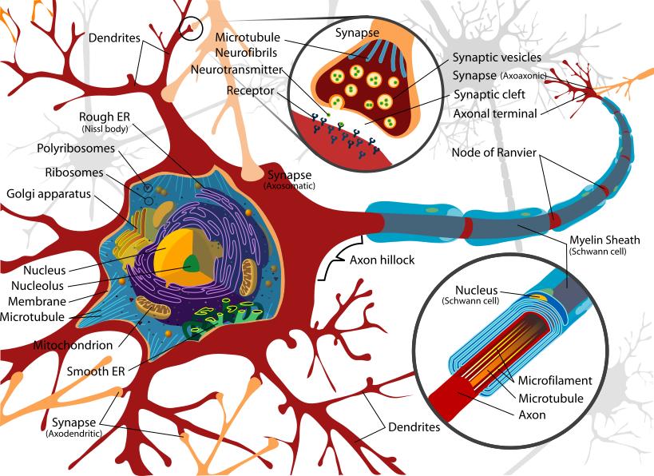

What is a neuron, really?
Most people learned in school that a neuron is "a brain cell that sends signals." That's about as useful as describing a phone as "a thing that sends signals." Let's build it from scratch.

If you're going to understand anything else about how the brain works (memory, perception, why caffeine makes you alert, why a stroke causes paralysis), you need a better picture of what a neuron actually is. Not the cartoon version from a high school textbook. The real one.
So let's build it up from scratch.
The cell
A neuron is, first and foremost, a cell. It has the same machinery as every other cell in your body. There's a nucleus that holds the DNA, mitochondria that produce ATP for energy, and a plasma membrane separating inside from outside. Grow one in a petri dish, look at it under a microscope, and at the level of basic cell biology it doesn't look fundamentally different from a liver cell or a skin cell.
What makes a neuron a neuron is what happens around that basic cell (its shape, and what it does with electricity).
The shape
Look at a neuron in detail and the first thing you notice is that it doesn't look like the textbook drawing of a "cell." A typical cell is a roughly round blob. A neuron is a small blob with branches.
The blob in the middle (the central cell body containing the nucleus) is called the soma. From the soma, two kinds of extensions reach out into the surrounding tissue.
The first kind is the dendrites (from the Greek dendron, "tree"). These are short, branching processes, and as the name suggests, they look like a tree's canopy. Their job is to receive signals from other neurons.
The second kind is the axon. Most neurons have exactly one axon, which extends much further than the dendrites, sometimes only a few hundred micrometers, sometimes (for neurons running from the spinal cord to the foot) over a meter. The axon's job is to carry the neuron's outgoing signal to other cells.
This shape is the first clue that a neuron is built to be a junction. Information comes in through many dendrites, gets integrated in the soma, and a single output goes out through the axon. Inputs collected. A decision made. A signal sent.
The electrical story
Now, what is the signal?
Here's where it gets strange. A neuron's signal is, fundamentally, a brief change in the voltage difference across its membrane. The cell controls this voltage by selectively pumping ions, sodium, potassium, chloride, and calcium, into and out of itself.
At rest, the inside of a neuron is more negative than the outside, by about −70 millivolts. This is called the resting membrane potential, and it's maintained by ion pumps in the membrane that constantly work to keep certain ions in and others out. The cell is, in effect, a tiny biological battery.
When a neuron is sufficiently stimulated (usually by inputs at its dendrites) that voltage suddenly flips. Sodium ions rush in. The inside briefly becomes more positive than the outside, peaking around +30 mV. Then potassium ions rush out and the voltage rapidly snaps back to resting. The whole event takes about one millisecond and is called an action potential, or more colloquially, a "spike."
This is the unit of neural communication. Every signal your brain sends (from the most casual movement of your eyes to a memory you'll have on your deathbed) is built out of patterns of these millisecond electrical pulses.
Once initiated, an action potential travels down the axon. Speeds range from less than a meter per second (in slow, unmyelinated fibers) to over a hundred meters per second (in axons wrapped in myelin, the fatty insulation that lets signals effectively "jump" between gaps in the sheath). That's the difference between feeling pain immediately and noticing a slow throb about a second later.
The Lab · Try it yourself
Drive a neuron to threshold
Here is that threshold you can feel. This is a leaky integrate and fire neuron, the textbook simplification. Nudge the injected current and watch what happens.
Below a certain push it settles at a low quiet level below threshold and never spikes. Above it, it fires a full spike and resets, and the harder you push the faster it fires. The spike size never changes, only the rate.
The chemical story

But the neuron doesn't pass that electrical signal directly to the next neuron. At the end of the axon, the signal converts into a chemical one.
The point where one neuron meets another is called a synapse. At the synapse, the sending neuron's axon ends in a slightly swollen tip, the axon terminal. The terminal is packed with small membrane-bound packets, or vesicles, each filled with neurotransmitters. You've heard of some of them. Dopamine, serotonin, glutamate, GABA, acetylcholine.
When an action potential reaches the axon terminal, it triggers the vesicles to dump their cargo into the tiny gap between cells (the synaptic cleft). The neurotransmitters drift across that gap (a distance of about 20 nanometers, less than a thousandth the width of a human hair) and bind to receptors on the next neuron's dendrites.
Different receptors do different things. Some open ion channels and nudge the receiving neuron closer to firing its own action potential (excitation), or further from it (inhibition). Others trigger longer-lasting biochemical cascades inside the receiving neuron that change its behavior over minutes, hours, or longer.
This electrical-then-chemical-then-electrical relay is the basic event of brain function. The brain is, at one level of description, a system that runs this electrical-to-chemical relay tens of billions of times every second.
The scale
How many neurons are we talking about?
The number you'll often see is 100 billion neurons in the human brain. The actual count, based on careful work by Suzana Herculano-Houzel and colleagues, is closer to 86 billion. Each of those neurons makes contact with, on average, several thousand other neurons. That puts the total number of synapses in the human brain on the order of 100 trillion.
For comparison, the entire global internet has on the order of 10 billion endpoints. The human brain has at least ten thousand times as many connection points as the internet, packed into roughly three pounds of tissue, running on about 20 watts of power.
The brain is, at one level of description, a system that does this trick tens of billions of times every second.
The honest caveats
So far, this is the standard story, and it's accurate as far as it goes. But it's worth being explicit about what it leaves out.
First, neurons aren't the only cells in the brain. Roughly half of the cells in the human brain are glia, support cells (astrocytes, oligodendrocytes, microglia) that for more than a century were treated as biological scaffolding. They're now understood to play active roles in signaling, immune function, and synapse maintenance. Treating the brain as "a network of neurons" is a useful simplification, but it's a simplification.
Second, individual neurons aren't interchangeable. There are hundreds of distinct neuronal cell types, distinguished by their shape, firing patterns, the neurotransmitters they release, and the proteins they express. A cortical pyramidal neuron and an inhibitory interneuron behave very differently. Saying "the neuron does X" the way I just did is a bit like saying "the human does X", true in a generic sense, misleading in any specific one.
Third, and most important, nobody actually knows how the firing patterns of these 86 billion neurons give rise to thought, memory, or consciousness. We know they do. We don't know how. The gap between "a neuron fires" and "I remember my childhood" is the central unsolved problem in neuroscience. It's good to be honest about that.
Why this matters
Every other post on this blog will reference what's on this page. When we talk about how a drug works, we'll be talking about which receptors it binds. When we talk about memory, we'll be talking about how patterns of synaptic strength change. When we talk about disease (Alzheimer's, Parkinson's, depression), we'll be talking about specific neurons in specific circuits doing specific things. And when we break down a single study, like the one that traced aggression to a pinhead of neurons, we'll be talking about exactly these cells.
A neuron isn't just "a cell that sends signals." It's a junction. It's an electrical-chemical hybrid. It's one of 86 billion connected nodes performing real chemistry on millisecond timescales. The whole rest of the field is built on top of that picture. It's worth getting it right.